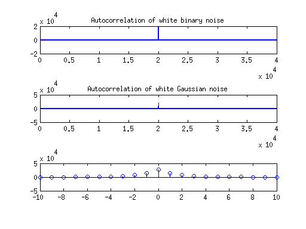

Contents
Problem 1
a) The graphs speak for themselves
L=100; x=linspace(1, L, L); figure(1) subplot(3,1,1); b=randi([0 1], 1, L)*2-1; stem(x, b); title('White binary noise'); subplot(3,1,2); g=randn(1, L); stem(x, g); title('White Gaussian noise'); subplot(3,1,3); u=rand(1, L).*b*sqrt(3); stem(x, u); title('White uniform noise');
c)
N=20000; b1=randi([0 1], 1, N)*2-1; g1=randn(1, N); u1=rand(1, N).*b1*sqrt(3); mean(b1) mean(g1) mean(u1) % All of the values are less than 0.01, so they are close to the % theoretical mean of 0 rbxx=xcorr(b1); rgxx=xcorr(g1); ruxx=xcorr(u1); figure(2) subplot(3,1,1); plot(rbxx); title('Autocorrelation of white binary noise'); subplot(3,1,2); plot(rgxx); title('Autocorrelation of white Gaussian noise'); subplot(3,1,3); plot(ruxx); title('Autocorrelation of white uniform noise');
ans =
0.0060
ans =
0.0079
ans =
0.0096
Problem 2
c)
N=20000; n=linspace(-9999,10000,N); gw=randn(1, N); h=(-1/2).^n; x=filter(1, [1 -1/2], gw); length(x) mean(x) %stem(x); mx=sum(x)/length(x1); %stem(mx); rxx=xcorr(x, 10); stem(-10:10,rxx); %stem(linspace(-length(rxx)/2, length(rxx)/2-1, length(rxx)), rxx);
ans =
20000
ans =
-0.0067
 Problem 3
a)
K=20; gw=randn(1, 100); x=filter(1, [1 -1/2], gw);